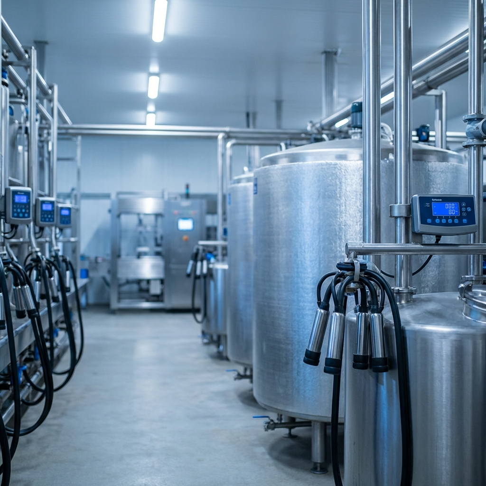

Tecnología de punta para el sector lácteo y ganadero

Fabricados en Acero Inox 304, con sistemas de refrigeración eficientes para mantener la calidad de la leche.

Equipos mecánicos y automáticos para optimizar la producción lechera con máximo confort animal.
Equipos diseñados para reducir la humedad del maíz, arroz y otros granos con secado uniforme y controlado.